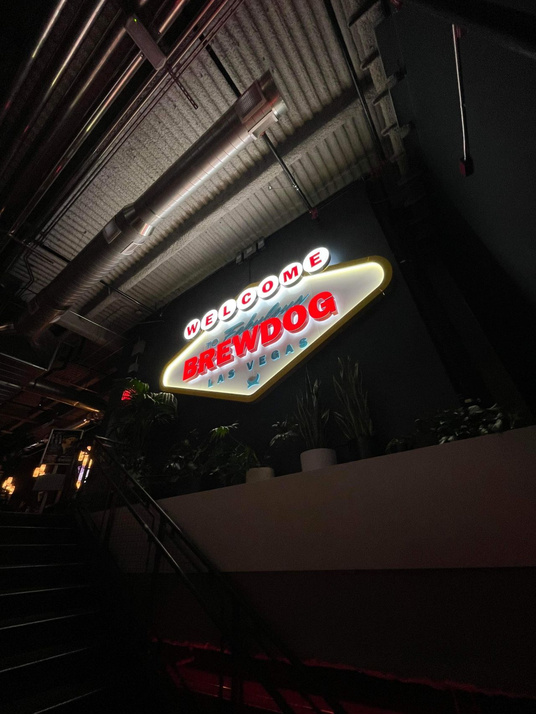
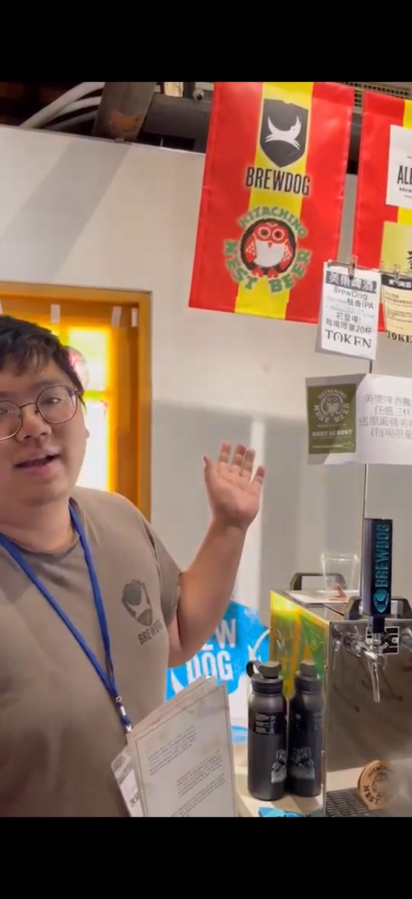
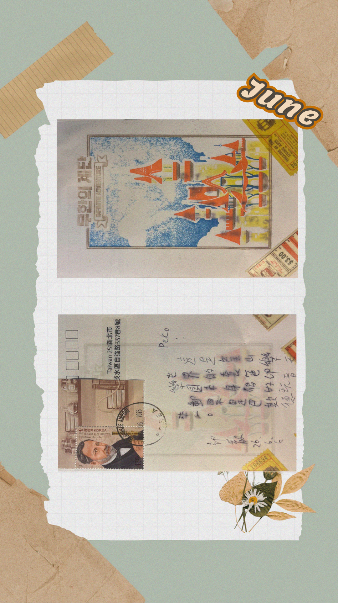
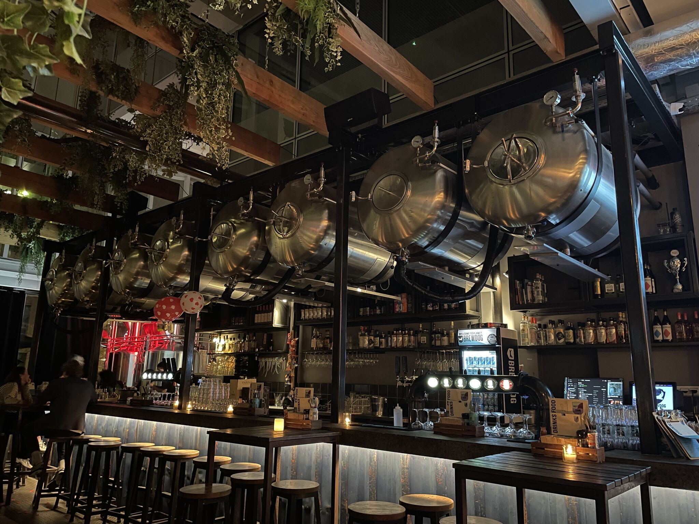
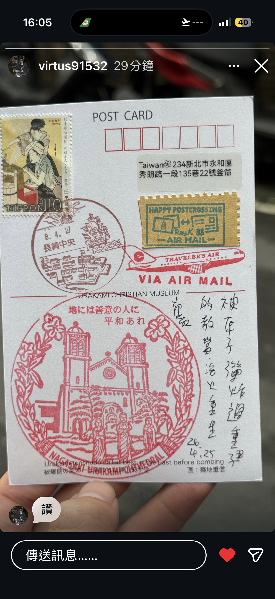
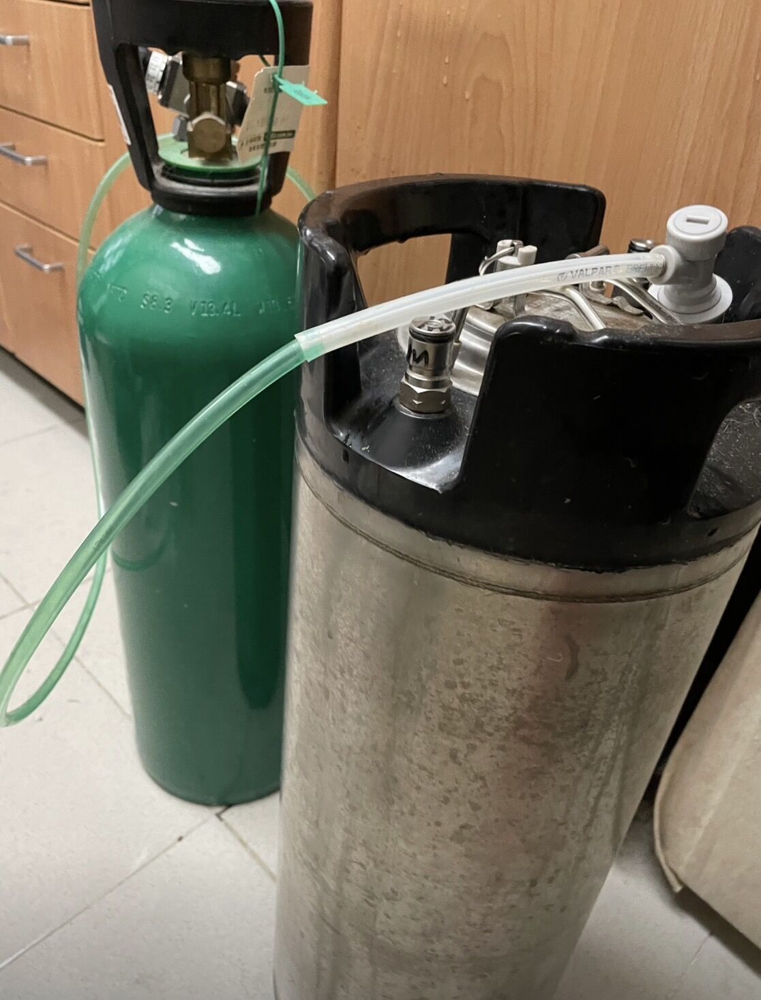

BrewDog 台灣品牌經營
帶著 BrewDog 走進台灣的酒吧與餐廳，直到某次以訪客身分走進 BrewDog Las Vegas，站在那個招牌下，才明白這份熱愛從來不只是一份工作。

ABOUT — 關於我
十年以上的酒精飲料產業經驗，從桶裝啤酒系統的維修保養到啤酒品質把關——在台灣，我維護過超過 200 套桶裝啤酒系統、訓練過 350 位酒吧與餐廳夥伴，也支援過全台 400 支出酒閥。
在 Asahi Breweries Taiwan 之後，我接手經營 BrewDog 在台灣的品牌，從技術服務一路做到通路與品牌經營（2021–2023）。手上還握著 BJCP 啤酒評審資格，以及 WSET Level 2 的侍酒知識。
工作之外，我隨身帶著一支鋼筆、一台底片相機，還有幾張空白明信片——速寫城市的天際線，拍下路上的偶然，把旅途寫成寄出去的隻字片語。接下來，我準備搬去英國，繼續找一份跟酒有關的工作，也繼續把路上的故事畫下來、拍下來、寄出去。
SELECTED — 精選片刻
酒吧裡的、路上的、信封裡的——這些是路途上被我留住的瞬間。

帶著 BrewDog 走進台灣的酒吧與餐廳，直到某次以訪客身分走進 BrewDog Las Vegas，站在那個招牌下，才明白這份熱愛從來不只是一份工作。

貼上郵票、蓋上郵戳，讓一張明信片替我去旅行——這是我在 Postcrossing 上的日常。
FIVE DRAWERS — 書桌上的五個抽屜
打開哪一個抽屜，就看見哪一段旅途。

壹
桶裝啤酒系統、啤酒品質，還有旅途上遇見的酒吧與故事。
貳
鋼筆淡彩，畫下路上的建築、街角與偶然停留。
參
大片幅、4x5、拍立得——慢下來，才看得清楚的瞬間。

肆
貼著郵票、蓋著郵戳，旅途寄回來的隻字片語。

伍
Postcrossing 與郵票裡的小知識、小故事。
COLLABORATE — 合作邀稿
如果你也對酒類品飲交流、聯名內容、明信片交換有興趣，歡迎聊聊。